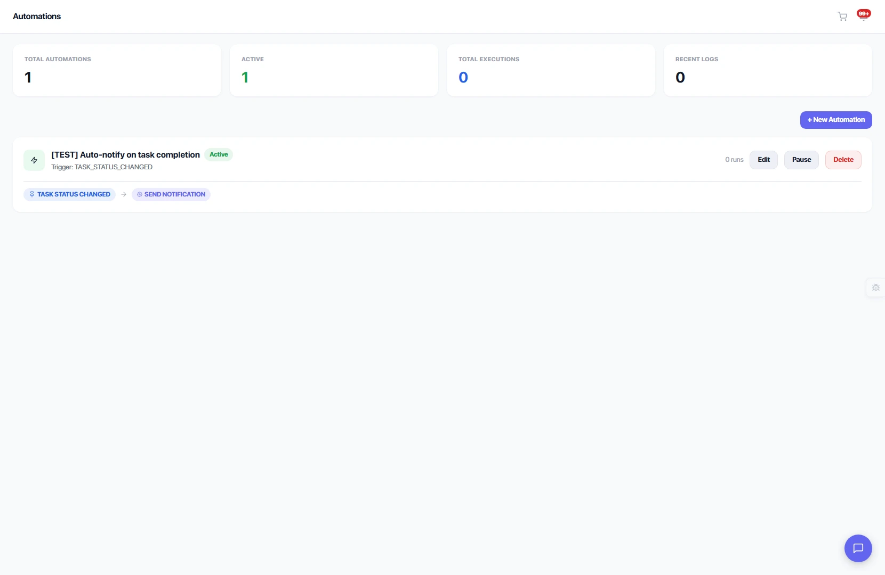

Collect what you need before you start
Build custom intake forms with drag-and-drop — 27 field types, multi-page wizards, conditional logic, and automatic project integration.

Responses flow directly into your project
Document Created
Responses are formatted into a readable HTML document and pinned to the project automatically.
Record Saved
A submission record links the response data to the form, project, and the client who submitted.
You're Notified
An in-app notification lands immediately so you can review responses and start work right away.
Loved by client-facing teams
"We used to email questionnaires back and forth. Now clients fill out the form right after purchase. We get structured data in the project instantly."
Built for teams like yours
Agency Owners
Standardize client onboarding across all services with reusable form templates.
Project Managers
Get structured requirements before kickoff — no more digging through email threads.
Dev & Design Teams
Collect assets, brand guidelines, and technical specs with file uploads and rich inputs.
Freelancers
Look professional with branded forms that collect everything upfront.
Frequently asked questions
Intake forms let you collect project requirements, preferences, and onboarding information from clients automatically after they purchase a service. Build custom forms with a drag-and-drop builder and assign them to any service in your catalog.
Eidoncore supports 27 field types across 6 categories: text inputs, selection inputs, date and time, rich inputs (file upload, signature, rating, color picker, slider), layout elements, and advanced fields like repeaters.
Yes. Organize longer forms across multiple pages with a step wizard interface, numbered progress indicators, and per-page validation. Ideal for comprehensive onboarding questionnaires.
Intake Forms is a Pro plan feature. On the Free plan, the sidebar item shows a lock badge, and clicking it shows an upgrade prompt.
Related features
Stop chasing requirements over email
Automate client onboarding with intake forms. 14-day free trial — no credit card required.